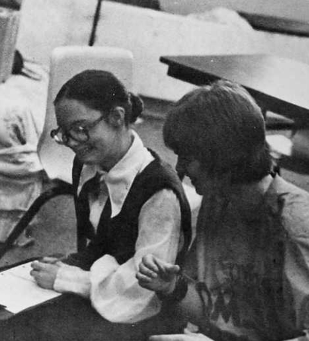

In Loving Memory
Celta Camille Head (1958–1991)
and
Lynn Denise Krupey (1967–2015)
Honoring Two Remarkable Women Who Changed a Life Forever
"I want you to know Celta Camille Head, the first woman I ever loved, who died so tragically young. I want you to know Lynn Denise Krupey, whose tears of joy when I gave her our engagement ring remain the brightest moment of my life."
— Bruce M. Whealton Jr., What Really Matters: Poems About Love, Loss & Trauma

Celta Camille Head
1958 – 1991
The first woman who made me feel truly seen and valued. Our brief but profound connection at Georgia Regional Hospital in 1990 transformed my understanding of love and self-worth. Though our time together lasted only a year, her impact resonates through every day of my life.
"After I was with Celta, I felt like I was ten feet tall."
Read Her Story

Lynn Denise Krupey
1967 – 2015
My soulmate, my partner, my greatest love. From our first meeting at poetry readings in Wilmington in 1992 through decades of shared creativity, laughter, and profound connection, Lynn's presence illuminated my world. Despite cystic fibrosis and countless challenges, our love story became an epic novel of devotion and resilience.
"Her tears of joy remain the brightest moment of my life."
Read Her Story
About This Memorial
This website serves as a lasting tribute to two extraordinary women whose lives, though tragically cut short,
left an indelible mark on the world and on my heart. Through their stories, preserved in poetry, prose, and
cherished memories, their spirits continue to inspire and guide.
These memorials draw from published works including Memoirs of a Healer, Overcoming Shyness & Loving Lynn,
Tell Me I'm Not Invisible, and What Really Matters: Poems About Love, Loss & Trauma. Each page
contains passages from these books, woven together to tell their complete stories.
Both Celta and Lynn taught me profound lessons about love's transformative power. Celta awakened me to the possibility
that I was worthy of love—the first person to truly see me. Lynn showed me that love could flourish even in the face
of chronic illness and overwhelming challenges. Together, they shaped who I became: a healer, a writer, a man who
understands the sacred gift of being seen, valued, and loved.
Poems of Remembrance
From What Really Matters: Poems About Love, Loss & Trauma
Where the Love Was
For Celta
They said you were an angry woman—
but where was your anger at me?
I only saw your smiles at me.
That's where the love was.
...the I love you's we exchanged...
all the tears I shed when I heard you died.
The love, it's in the memories...
What Really Matters
For Lynn
Moments frozen in time.
That is what love seems to be...
something... has a certain meaning
that endures...
whatever it is that you remember
is all that really matters.